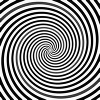

简单地说：催眠术是利用心理暗示进行沟通的技术。
复杂地说：催眠术是绕过表面意识而进入潜意识输入语言或肢体语言的行为。
理论地说：催眠是心理暗示行为，施术者通过语言、声音、动作、眼神的心理暗示
在受术者的潜意识输入信息，
改变其思维模式和行为模式，受术者可以闭上眼睛，也可以不用闭上眼睛，
甚至会无意识接受了催眠师的心理暗示。
催眠的深度因个体的催眠感性、催眠师的威信与技巧等的差异而不同。
据历史记载，公元1774年奥地利的麦斯麦医生，他以“动物磁力”的心理暗示技术开创了催眠术治疗的先河。
1841年英国医生布雷德尔出版了一本书——《神经催眠术》，在此书中他正式把心理暗示技术定名为“催眠”。
在催眠定名后的170多年历史，催眠术最初是多应用于心理治疗，但在近代的数十年间，催眠开始涉及到更多领域，
比如医学麻醉、婚恋、教育、运动、职场、警务和演艺等领域。
在一些对催眠术不太熟悉的人眼中，可能会觉得催眠术非常的神秘，类似于一种巫术或者说魔术。
其实催眠术就是在古代的巫术中发展过来的。催眠状态是一种类似睡眠又非睡眠的意识恍惚心理状态。
而催眠术就是运用心理暗示等手段让被催眠者进入到催眠状态的一种心理暗示技巧，
这种心理暗示技巧包括如放松、单调刺激、集中注意、想象等方法，将人诱导进入到催眠状态之中。
不管是国内还是国外，在古代就有很多类似于催眠的记载，只是因为当时的科学并不发达，
所以他们的催眠更偏向于神学，带有一定的迷信色彩，直到了十八世纪奥地利的麦斯麦医生以“动物磁力”的心理暗示技术开创了催眠术治疗的先河。
但是他的理论也不科学，依然带着神学宗教的色彩。